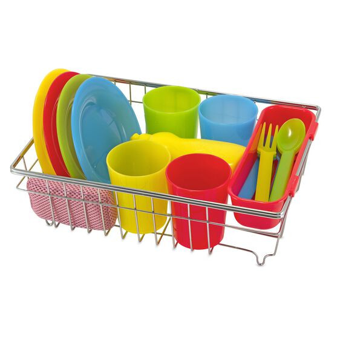

Available
Wash and Dry Dish Set
Pretend Play
R475Includes 4 place settings (cups, plates, forks, spoons, knives) plus squeezable soap bottle, mesh-covered sponge, and metal drying rack 24 pieces Use with a play kitchen or as a stand-alone play set Set of play dishes and utensils with a play 'washing up' set Great for sorting, matching, hand-eye coordination, social skills, and communication skills. Product: 4
Enquire about this product

Wash and Dry Dish Set at Kids Corner KZN
Wash and Dry Dish Set is part of our Pretend Play collection. Kids Corner KZN stocks toys for learning, pretend play, creative play, gifting and everyday childhood discovery in South Africa.
Browse more Pretend Play toys